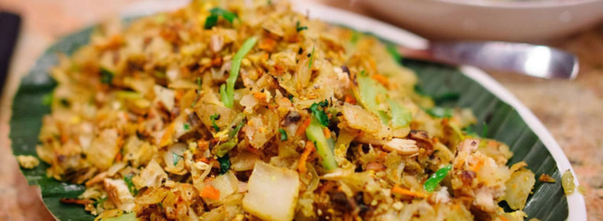
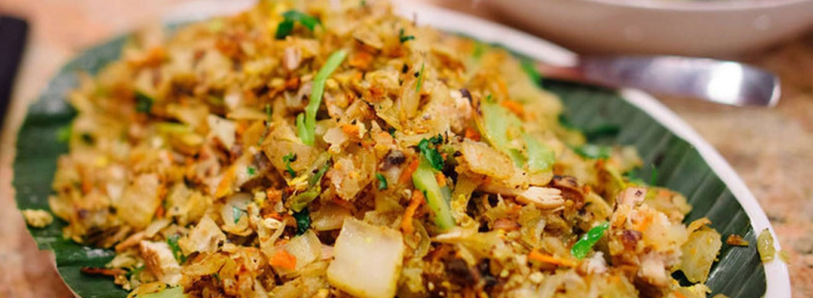

The distinctive combinations of herbs, spices, fish, veggies, and rice in Sri Lankan cuisine are well known. Numerous types of rice and the plant known as the coconut, which is found all over the nation, are important components of the cuisine. The menu also emphasizes seafood, whether it be fresh fish or fish that has been preserved. Sri Lankan cuisine has been influenced by the local traditions of the nation's ethnic groups as well as new foods and cultural influences brought by contact with foreign merchants who used the country as a hub on the ancient oceanic silk road. The most overt influences come from South Indian, Indonesian, and Dutch cuisines, while Sri Lankan cuisine has strong links to other nearby South and Southeast Asian cuisines.
Cinnamon was once the national crop of Sri Lanka. In order to represent its Sri Lankan roots, the botanical name of the true cinnamon tree, or Cinnamomum verum, was previously changed to Cinnamomum zeylanicum. Comparing it to Cinnamomum cassia, which is more frequently found in some other South East Asian dishes, this spice is more commonly used in Sri Lanka and has a more delicate, sweet flavour. When compared to nearby cuisines, Sri Lankan cuisine stands out for its distinctive spice blends, which heavily feature Sri Lankan cinnamon and black pepper, as well as its use of ingredients like maldivian fish, goraka (garcinia cambogia), pandan leaf, lemongrass, and jaggery made from kithul palm syrup.